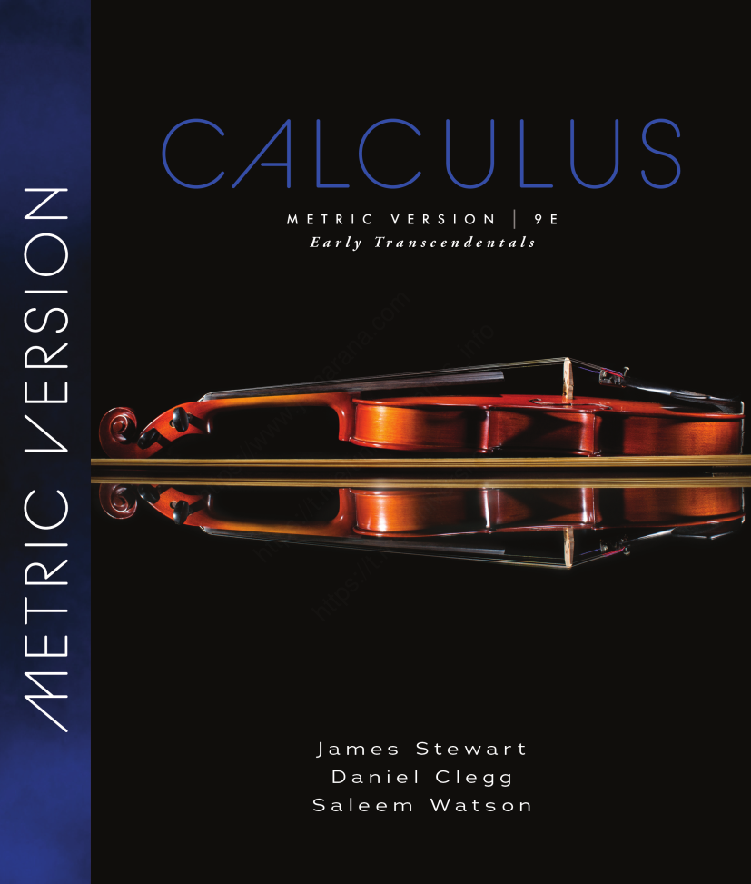

Calculus of a single variable is fundamental to Mechanical Engineering because many mechanical quantities change continuously with respect to time, position, temperature, displacement, or another single variable.
The major reasons of studying the course are discussed below.
Mechanical engineers constantly deal with position, velocity, and acceleration.
If position is s(t):
v(t)=\frac{ds}{dt}, \qquad a(t)=\frac{dv}{dt}=\frac{d^2s}{dt^2}
For example, calculus is used to analyze the motion of pistons, vehicles, robotic components, and rotating machinery.
Integration allows engineers to obtain quantities accumulated over a continuous interval.
For example distance covered by a machine part can be computed with the following equation
s=\int_{t_1}^{t_2}v(t)\;dt
Another example is to calculate the mechanical work, which can be obtained using the following equation
W=\int_{x_1}^{x_2}F(x)\;dx
This is essential when force is not constant.
In real mechanical systems, forces may vary with position or time.
For example, for a spring:
F(x)=kx
The work required to stretch it from 0 to x is
W=\int_0^x kt\;dt=\frac12kx^2
Calculus therefore connects mathematical models with actual mechanical behavior.
Quantities such as pressure, velocity, flow rate, and temperature can vary continuously.
For example, calculating the total force exerted by a varying fluid pressure requires integration:
F=\int p(x)\;dA
Single-variable calculus provides the foundation before students move to the multivariable calculus used in advanced fluid mechanics.
Temperature can vary with position or time:
T=T(x)
Its rate of change is described by a derivative given below
\frac{dT}{dx}
For example, Fourier’s law of heat conduction involves a temperature gradient as shown below
q=-k\frac{dT}{dx}
Mechanical engineers frequently need to find maximum or minimum values.
Calculus provides the basic optimization tools
f'(x)=0
Examples include
Derivatives tell an engineer how a quantity is changing, while integrals tell how quantities accumulate.
For example:
| Calculus concept | Mechanical interpretation |
|---|---|
| f'(x) | Rate of change |
| f''(x) | Rate of change of a rate |
| \int f(x)\;dx | Accumulated quantity |
| Maximum/minimum | Optimum design condition |
| Area under curve | Accumulated physical quantity |
| Slope | Physical rate/gradient |
This is perhaps one of the most important reasons.
Mechanical engineering systems are often described by differential equations. For example, the mass-spring-damper system
m\frac{d^2x}{dt^2} +c\frac{dx}{dt} +kx=F(t)
Understanding derivatives and integrals from single-variable calculus is essential before studying such equations.
Single-variable calculus is a prerequisite/foundation for subjects such as:
Many of these eventually require multivariable calculus, differential equations, linear algebra, and numerical methods.
You can think of calculus as giving you three important mathematical abilities:
\boxed{\text{Change}} \quad\rightarrow\quad \boxed{\text{Derivative}}
\boxed{\text{Accumulation}} \quad\rightarrow\quad \boxed{\text{Integral}}
\boxed{\text{Best/Optimal Solution}} \quad\rightarrow\quad \boxed{\text{Optimization}}
These ideas eventually connect mathematics with mechanical engineering and mechatronics.
The major purpose of studying single-variable calculus in Mechanical Engineering is to develop the mathematical ability to model, analyze, predict, and optimize continuously changing physical systems.
The above discussion is to convince you on the reasons, scope, and importance of studying calculus and is not required to prepare with reference to exams.
Mathematics is the language of science. A single mathematical model describes the reality (real physical world).
Consider,
s = ut + \frac12at^2
What is ut?
What is at^2?
Understanding the language of Mathematics is primary focus, solving is secondary focus give both equal weightage for success in Mechanical Engineering.
Review of vectors, scalar and vector products
Three-dimensional coordinate system and equation of straight line and plane
Limits & continuity, techniques of finding limits.
Techniques of differentiation, Tangent lines and rates of change
Extrema of functions, Rolle’s and Mean value theorems, Concavity
Riemann sum, definite integrals, and properties of integrals
Solids of revolution, volume of solids of revolution by cylindrical shell & Cross section methods
Arc length, surface of revolution, Centre of mass
Indeterminate forms and L Hospital rule, trigonometric integrals
Improper Integrals
Convergence and divergence of sequences and series, positive term series, integral test
Basic comparison test, limit comparison test, the ratio and root tests, alternating series, absolute and conditional convergence
Power series, Maclaurin and Taylor series
You need hard work on theoretical as well as solution part. Practice both on registers.
Self study summary aftere preparing the topic gives a bird’s eye view of the topic and main points.
Mandatory part of the lecture and indicates the understanding of the topic. Assessment questions will be unseen. Exercises prepare you to solve those unseen questions.
Class attendance of 75% or above is mandatory to sit in the final exam. An attendance of 74.99% in Qalam leads to ineligibility to appear in the final exam. There is no concept of leave, sickness, urgent piece of works, family functions etc. and you have to use the cushion of 25% in attendance for such occasions. Once availed, you don’t have any cushion for emergency or unforseen absents from the class.
After 10 minutes, attendance will be closed. Late comers are allowed to join the class, however, their attendance will not be marked.
Hard work \ne No work/Just prepare
Everyone is the same for me
